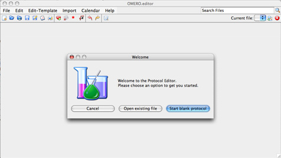
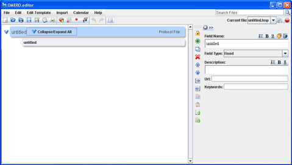

When you start OMERO.editor, you will be given the option to start a new OMERO.editor file.
You can also start a new file by clicking the "New File" icon on the tool bar.
|  |
| Figure 2.2-1 The Start Screen of OMERO.editor, on Mac OS 10.4. |
When a new OMERO.editor file is started, a title field is created, and one additional field is added, to start the protocol. These are displayed in the left hand side of the screen, and can be selected here for editing in the panel to the right.
|  |
| Figure 2.2-2 A new OMERO.editor file, showing a title field and one additional field, added automatically. Running on Windows XP. |